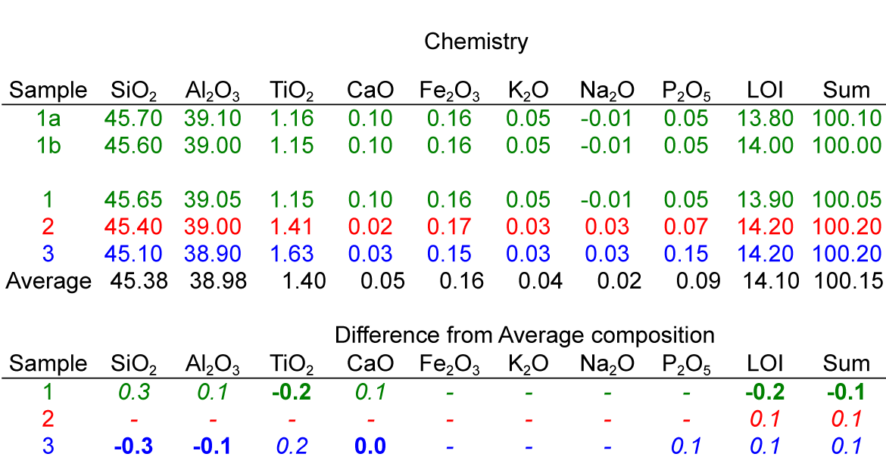

Here are some field observations and unpublished supporting data
regarding the variations in kaolinite crystallinity.
Thanks go to Bob Pruett, who allowed my clay mineralogy class to
access the mine and to Ian Stubbs, who conducted some of the
analyses.
Pictured below is a kaolin mine in middle Georgia. In the
foreground the kaolin is very hard (too hard for backhoe to mine).
In the distance, note the backhoe is mining at a lower level within
the same stratagraphic unit.
Three samples were collected.
#1. Base of mine (off in distance)
#2. Midway between the backhoe and the group of student below.
#3. Top of deposit where students are gathered.
XRD data below.
Differential Scanning calorimeter data below:
SEM images below:
Chemical data from X-ray Fluorescence. The top two rows are
replicates of the same sample. The middle rows are the
respective values for 1, 2, and 3. The lower part of the table looks
at the difference from the sample average.

Summary of data and other sample characteristics.
You might now ask.... Why are the samples from the same deposit
different from each other?
Here's are links to papers that consider aspects of the question.
Schroeder, P.
A.,
Robert J. Pruett and Nathan D. Melear2004 Crystal-chemical
changes in an oxidative weathering front in a middle Georgia
kaolin deposit.Clays and Clay Minerals v.
52, 212-220. Schroeder, P. A., and Shiflet, J., 2000 Ti-bearing phases in an
east Georgia kaolin deposit: Clays and Clay Minerals, v. 48(2) 151-158.
Vernon J. Hurst and Sam
M. Pickering 1997 Clays and Clay Minerals,
Apr ;
45:
274 - 285.